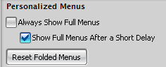
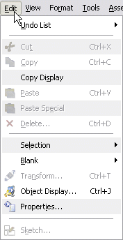
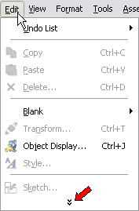

定制菜单
您可以定义定制的菜单，使用定制对话框(选项选项卡)中的个性化的菜单来设置您偏爱的菜单显示。

-
始终显示完整的菜单 – 让所有菜单项都显示在菜单条上。

-
在短暂的延迟后显示完整的菜单 – 此选项默认选中，选中后，菜单将被折叠，不常用的命令将在短暂延迟后才被显示，点击菜单底部的向下箭头，快速显示所有命令。

-
重置折叠的菜单 – 恢复默认的菜单折叠设置。当点击此项后，用户对各个菜单命令使用的频率信息将被清除并恢复至系统默认状态。
位于何处？
|
工具条 |
工具条选项按钮 |
|
菜单 |
工具→定制→选项 |